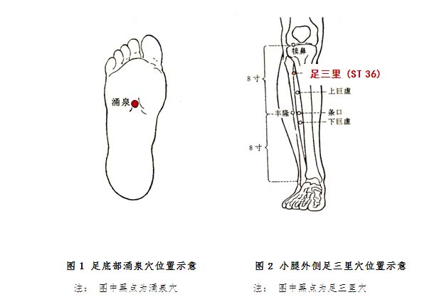

平和质调理方法
1. 调体专用产品
【名称】平和饮
【食用方法】每次1-2袋，以适量温开水冲调食用，每天2次。
2.情志调摄
在日常生活中保持平和的心态。可根据个人爱好，选择弹琴、下棋、书法、绘画、听音乐、阅读、旅游、种植花草等放松心情。
3.饮食调养
不要过饥过饱，也不要进食过冷过烫或不干净食物；粗细粮食宜合理搭配，多吃五谷杂粮、蔬菜瓜果，少食过于油腻及辛辣食品；注意戒烟限酒。
四时饮食调养：①春宜多食蔬菜，如菠菜、芹菜、春笋、荠菜等。②夏宜多食新鲜水果，如西瓜、番茄、菠萝等，其他清凉生津食品，如、菊花、鲜芦根、绿豆、冬瓜、苦瓜、黄瓜、生菜、豆芽等均可酌情食用，以清热祛暑。③长夏宜选用茯苓、藿香、山药、莲子、薏苡仁、扁豆、丝瓜等利湿健脾之品，不宜进食滋腻碍胃的食物。④秋宜选用寒温偏性不明显的平性药食。同时，宜食用濡润滋阴之品以保护阴津，如沙参、麦冬、阿胶、甘草等。⑤冬宜选用温补之品，如生姜、肉桂、羊肉等温补之品。
4. 起居调摄
起居宜规律，睡眠要充足，劳逸相结合，穿戴求自然。
5.运动保健
形成良好的运动健身习惯。可根据个人爱好和耐受程度，选择运动健身项目。
6.穴位保健
（1）选穴：涌泉、足三里。
（2）定位：涌泉位于足底部，卷足时足前部凹陷处，约当足底2、3趾趾缝纹头端与足跟连线的前三分之一与后三分之二交点上（见图1）。足三里位于小腿前外侧，当犊鼻下3寸，距胫骨前缘一横指处（见图2）。
（3）操作：用大拇指或中指指腹按压穴位，做轻柔缓和的环旋活动，以穴位感到酸胀为度，按揉2～3分钟。每天操作1～2次。
